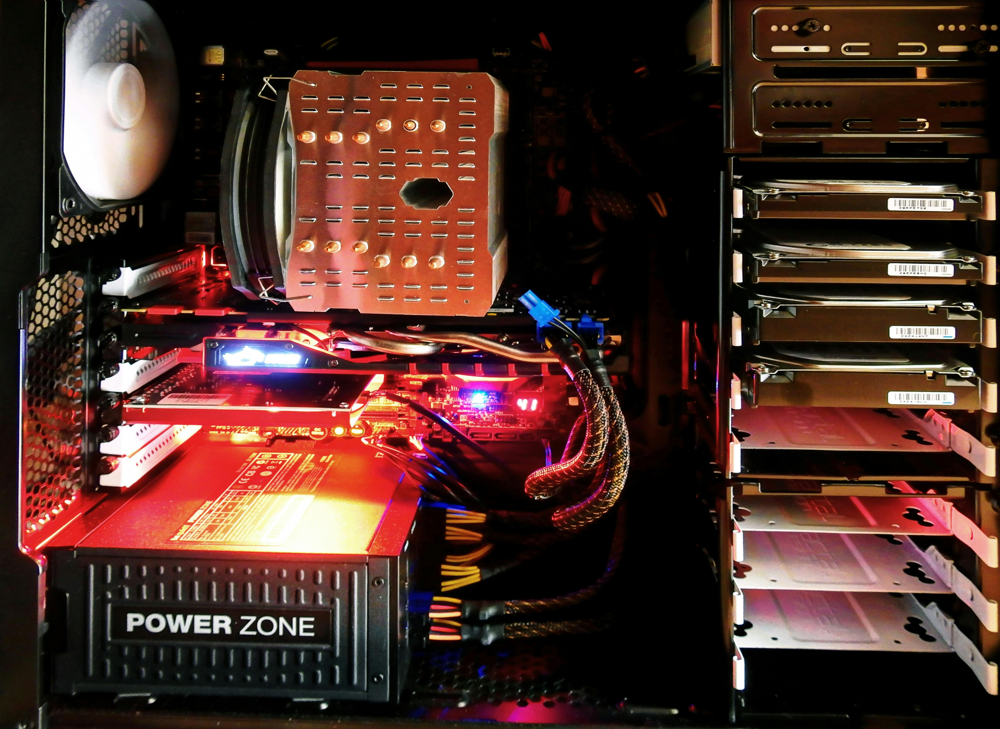
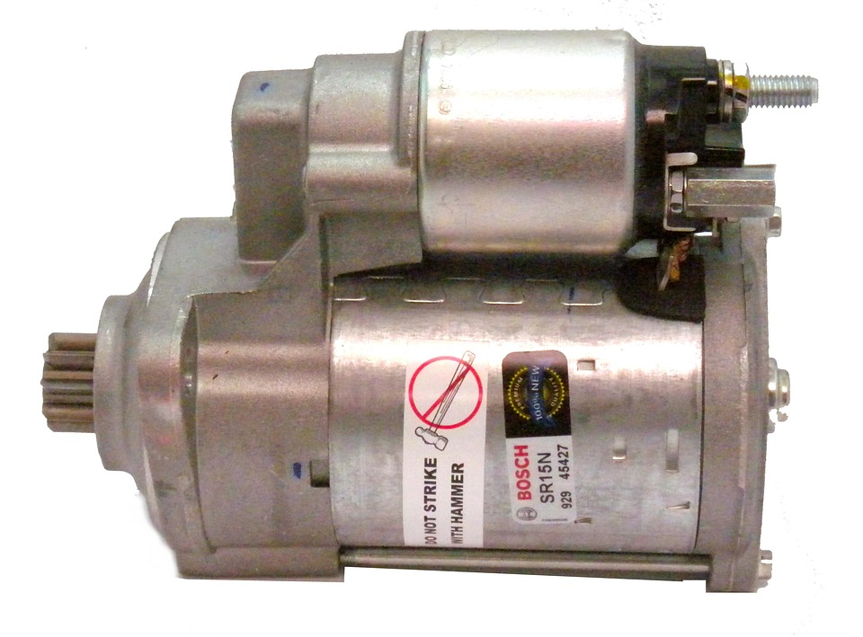
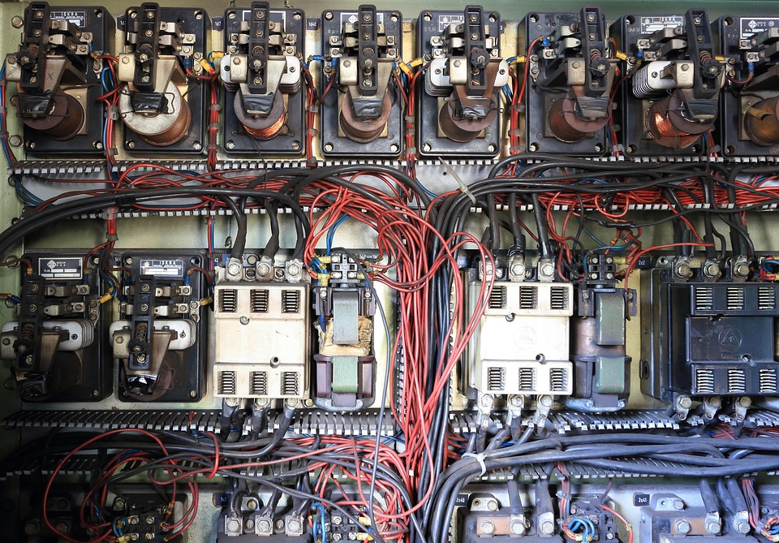
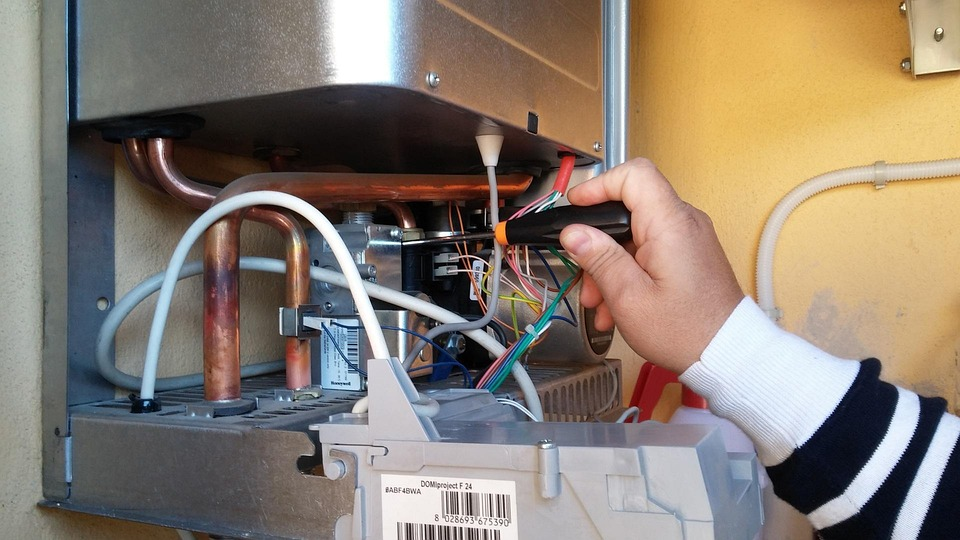

Fontes de Alimentação: Ajuda a escolher componentes adequados para evitar superaquecimento. Regula a tensão e a corrente para garantir um funcionamento seguro. Reduz perdas elétricas, tornando o sistema mais eficiente.

Motores Elétricos: Determina o consumo de corrente para evitar sobrecargas, além de garantir que a fiação suporte a corrente sem perdas excessivas e permitir o ajuste da velocidade e o torque do motor.

Circuitos Elétricos: Auxilia no cálculo de resistência para proteger componentes, além de permitir projetar divisores de tensão para sensores e controles, evitando curto-circuito e sobrecargas e dessa forma garantindo segurança.

Aquecedores Elétricos Aquecedores elétricos são dispositivos que convertem energia elétrica em calor por meio do efeito Joule — que ocorre quando uma corrente elétrica passa por um material resistivo, nesse caso um metal Ôhmico, gerando calor.
